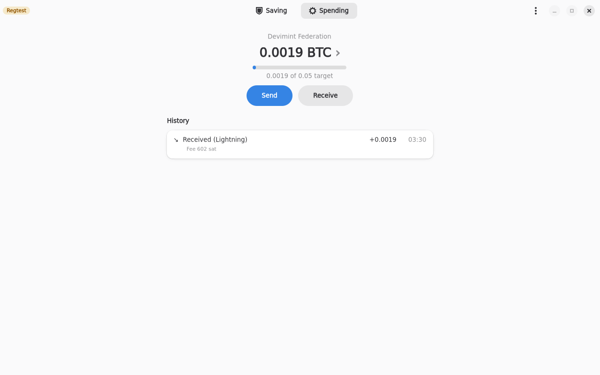
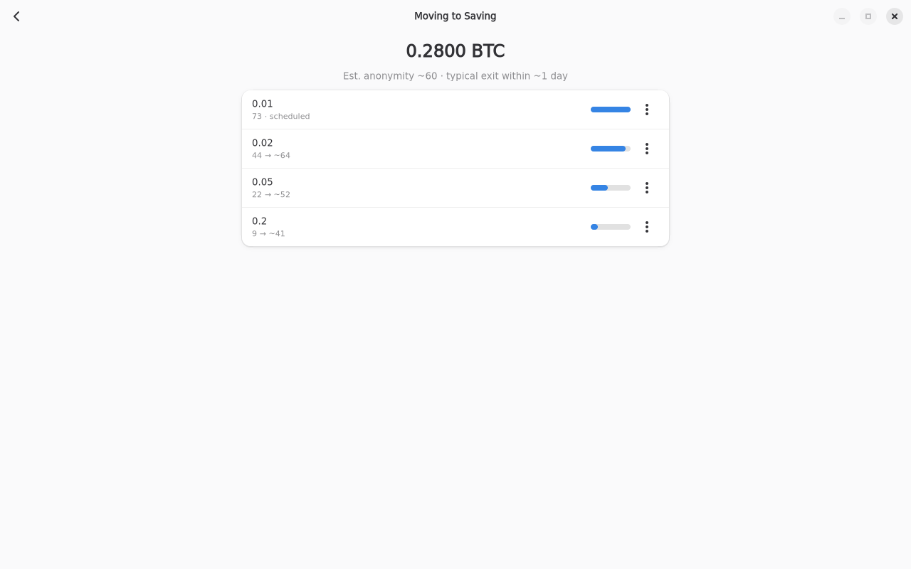
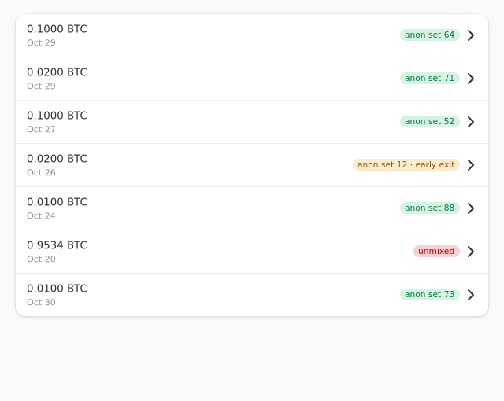
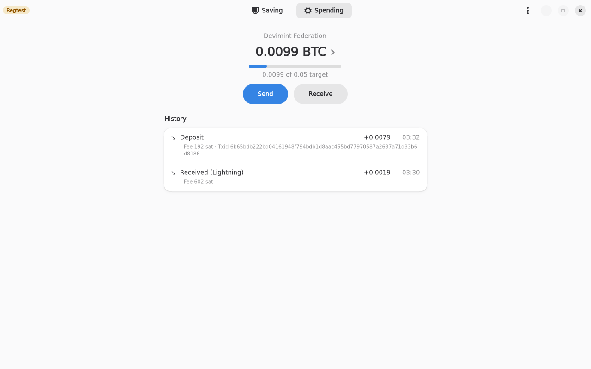

3-minute talk script
On-chain privacy is hard
On-chain privacy is hard. Combining UTXOs is dangerous, even when you use CoinJoins, because spending them together links them again.
Receiving over time does not fix it. If you consolidate often, you still link your coins, or you pay a lot in fees to avoid it. Either way, privacy and cost pull against each other, and that is the problem we set out to solve.
Fedimix
Fedimix takes a different route. You receive into a Fedimint wallet, called Spending, over time. Money can come in over Lightning or on-chain, in small pieces, whenever it arrives. Nothing has to be consolidated by you. I will skip joining a federation, you only do that once.

Withdraw common denominations
Anything above Spending's target is split into common denominations and queued: here 0.01, 0.02, 0.05 and 0.2.
This is the key idea. A coin leaves only when two things are true: the threshold amount is reached, and the anonymity set is large enough. Both, not one.
Each row shows its anon set, roughly how many other deposits it could be mistaken for. It rises as other people deposit into the federation, and the bar shows progress. The header says typical exit within about a day.
The exit time is random, Poisson-distributed and shorter as anonymity grows, so the moment a coin leaves reveals nothing.

Exit to cold Saving
When its time comes, the coin exits by itself and lands in cold Saving, tagged with its anon set at exit, here 73. Unmixed coins show in red.
If you need money now, Exit now shows the fee, 420 satoshis, and warns that privacy is lower. That coin lands tagged anon set 59, early exit, so you always see which left early.

Spend daily, save on-chain
The Fedimint wallet is for daily spending, with great privacy. Large amounts stay on-chain, in your own cold storage, for maximum self-sovereignty. Each side does what it is best at.
And the loop closes: when you send from Saving, the change is paid back into Spending as ecash, and Refill tops Spending up.

Status and thanks
So: receive over time, exit in common denominations once the anonymity set is large enough, spend from ecash, save on-chain. The source is on GitHub under elsiribot slash fedimix. Thanks for listening.